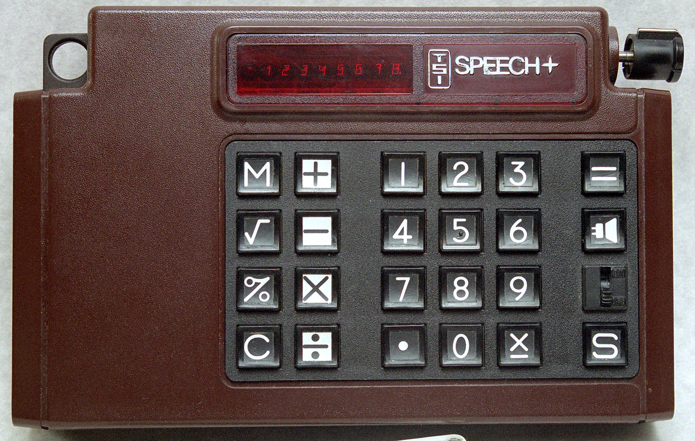

TSI Speech+ Talking Calculator
The first talking calculator — you hear every key you press

Overview
The TSI Speech+ is the first commercial hand-held talking calculator. It went on sale in 1976 at US$395 (Popular Electronics covered it as "A Talking Calculator" in May 1976), made by Telesensory Systems Inc. of Palo Alto — the company behind the Optacon tactile reading machine and, later, the Optacon II (both in this museum). The Computer History Museum dates its example to c. 1975 and holds it in its permanent collection (object 102628744).
The calculator has an 8-digit red LED display and speaks both the keys pressed and the displayed number through a small speaker. The keypad deliberately uses the layout of a touch-tone telephone (1 at top-left, 9 at bottom-right) rather than a conventional calculator layout, because TSI reasoned that blind users would already be familiar with a telephone keypad. Power is a knob at the top that is pulled to switch on and then acts as the volume control. Below the "=" key sits a loudspeaker-symbol key that speaks the display; a slide switch turns off speech for all keys except that speaker key, so experienced users can work silently while still being able to ask "what's the answer?" The machine says "clear" on power-up, and a word in progress is interrupted immediately when a new key is pressed.
Deep dive
The Speech+ treats sound as the primary output channel. Every keystroke is spoken — digits and operators, and cleverly, the change-sign key, which says "times minus" because its two-word reading cost only two extra bytes in the ROM. A dedicated speaker key announces the displayed value at any time, regardless of the mute-switch setting. Because any new word interrupts the current one, rapid keying produces a fast staccato readout rather than a backlog. This auditory-verification loop — type, hear, correct — is exactly how a sighted user reads a display, transposed into a modality a blind user can monitor. The operating instructions shipped on an audio cassette tape: even the manual was audio-first.
TSI's choice to arrange the keys like a telephone (1 at top-left) rather than a calculator (7 at top-left) is a deliberate, documented, accessibility-first ergonomic decision. Ed Bernard, the S14001A designer, recorded it: "This was an intentional decision by TSI as it was felt that the blind would already be familiar with a phone, but not a calculator." The phone layout became a small convention of its own in later talking calculators aimed at blind users.
Silicon Systems Inc. was approached in March 1975 to integrate Forrest Mozer's speech-synthesis algorithm into a single chip. The S14001A was a p-channel, depletion-load, two-phase dynamic-logic chip of about 1,500 transistors running at 13 kHz, with an on-board 4-bit D/A converter built from four parallel capacitors. Mozer's compression exploited properties of human hearing: voiced speech repeats its waveform each pitch period and the ear is insensitive to phase, so only a quarter of each pitch period was stored — the second quarter played the first in reverse, and the second half of the period was silence. Levels were quantized to 4 bits and stored as 2-bit deltas. The result: a 24-word vocabulary in a 4K mask ROM. The calculator chip, a TI TMC1007NL, is from the same TMS1000 family that powers the museum's Simon, Merlin, and Little Professor.
The Speech+ was "the first commercial hand-held speaking calculator and a very early use of speech synthesis in a consumer product" (Nigel Tout's Vintage Calculators) — predating the Speak & Spell by two years. A demo unit loaned to Johnny Carson for a Tonight Show "new gadget" segment so delighted him that he refused to return it. The S14001A lives on in emulation: Sean Riddle has decapped and fully documented the chip with die shots and ROM dumps, and the speech chip is emulated in MAME. The device anchors the story TSI told across two decades of assistive computing: the same company gave blind users the Optacon (tactile), the Speech+ (aural), and later the Optacon II — a coherent family of sensory-substitution interfaces, three corners of which now sit in this museum.
TI-59 (1977) and TI Little Professor (1976) are silent; TRS-80 Voice Synthesizer (1979) is a computer peripheral that reads screen memory; Minolta Talker (1984) is a camera that advises. The Speech+ is the museum's only hand-held computer whose primary output channel is speech — and it is the earliest speech-synthesis consumer product in the collection.
Team & pioneers
- Telesensory Systems Inc. (TSI). Palo Alto manufacturer of the Speech+ and the Optacon; commissioned the S14001A and custom-programmed the TMC1007NL calculator chip.
- Forrest S. Mozer. UC Berkeley physics professor; author of the speech-synthesis algorithm licensed for the Speech+, compressing 24 words into 4K of ROM.
- Ed Bernard. Silicon Systems Inc. design engineer for the S14001A speech chip (1975); documented the chip's architecture in detail for Vintage Calculators (2015).
- Grant Still Shatto II. Silicon Systems lead mask designer for the S14001A; the demo unit he was given appeared on the Johnny Carson Show.
- Silicon Systems Inc. (SSi). Tustin, CA IC design house that developed and supplied the S14001A and the S14007 mask ROM.
Media
Sources
- Vintage Calculators (Nigel Tout) — TSI Speech+ and other speaking calculators
- Vintage Calculators (Nigel Tout) — The Development of the TSI Speech+ (Ed Bernard, Grant Still Shatto, 2015)
- Computer History Museum — TSI SPEECH+ (revolution exhibit page)
- Computer History Museum collection — TSI Speech+ model S1C (102662875)
- Sean Riddle — TSI Speech+ teardown, die shots, and ROM dumps
- Popular Electronics, May 1976 — "A Talking Calculator" (period source, cited via Vintage Calculators)